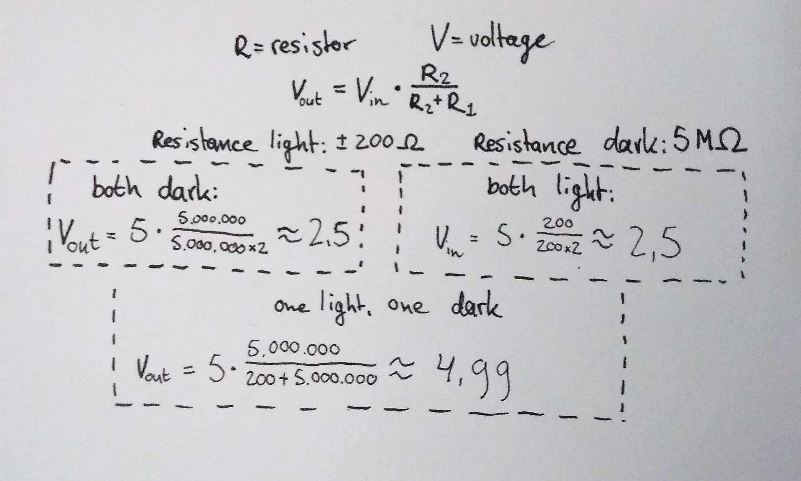

What is Arduino?
Arduino is an open source hardware and software company that designs and manufactures kits for building digital devices that can sense and control both physically and digitally. So basically what we did in this workshop was build small circuits with LEDs, buzzers, buttons and motors to make setups that we can code so that they respond how we want them to.
Exercises
Note: the codes for each exercise can be found at the bottom of the page.
Exercise 3
After our first introduction to the software, we get started on working with the hardware kit. So far, everything looks familiar. The coding language reminds me of a language we learned last year, called Processing. The first assignment is simple enough: light an LED. The second assignment (this one) required two LEDs to be lit. I struggled a bit at the first try, but then discover that I have to edit the code as well in order to make the whole thing work. I do so and both LEDs light up. I do run into some trouble with the hardware, since I can’t really tell whether one is really flashing twice as fast as the other. However, looking at my code, I think I did well.
Exercise 4
In this exercise, we have to fade the lights. In order to do so, we have to move the pins that we are using. Only certain pins are capable of pulse width modulation, which allows for dimming of the brightness. I move the pins from 12 and 13 to 10 and 9. The assignment asks for a for-loop. I start to panic a little, since I had a lot of trouble with those in the last programming course. Fortunately, they aren’t as scary as I remember and I finish the assignment without too much of a hassle.
Exercise 6
For this assignment, we have to make a contraption that allows us to dim the LEDs. I think this is pretty cool, because it is a responsive design that is recognizable from real life. I add the potentiometer to my circuit and edited my code so that now the lights respond to dimming.
Exercise 7
This assignment adds LDRs to the loop. LDR stands for Light Dependent Resistance. The more light and LDR catches, the lower its resistance will be. The goal is to build a circuit that dims the light when it’s light out and turn them up when it’s dark.
Exercise 8
A voltage divider is a circuit that turns a large voltage into a smaller one. Using two resistors and an input voltage, an output voltage can be created that is a fraction of the input. Two resistors of the same value always have an output voltage of 2,5V, exactly half of the input voltage, which is always 5V in an Arduino board. This means, when you put two LDRs on an Arduino, they will give the same amount of resistance since they’ll get the same amount of light because they are so close together. The output voltage will be 2,5V. Below is a picture of the calculations:
I then built a circuit with a voltage divider and measured the output voltage. As expected, when both resistors are either in light or darkness, the output voltage is the same: 2,5V. When R1 is covered, the voltage goes up to 5. When R2 is covered, the voltage goes down to nearly zero. Note: the table shows a value of 3V instead of 2,5V, this is because I forgot to turn the float value into an integer.
Exercise 9
For this exercise, we made processing communicate with Arduino. We made an input with a potentiometer with Arduino, and then output the potentiometer value into Processing. This variable can now be reached in Processing. I used the potentiometer value to determine the coordinates of a grey bar.
Exercise 10
The simplest sensors are buttons. In this exercise, I made a switch for a green LED with two buttons. It started off simple, one button, one LED. But for the last exercise I connected two buttons and wrote a code so that the LED only lights up when only one button is pressed, not both.
Exercise 11
The servo motor is a small motor that has a rotating appendage on it. It can turn to a precise position, and it only rotates 180 degrees. For this exercise I wrote a code so that the servo motor does a little movement that resembles the sprinkler dance move.
Exercise 12
Besides directly through the code, Servo motors can also be controlled with inputs. For example, with a potentiometer or a set of buttons. In this exercise I used two buttons and made them correspond to one direction each. When pushed, the servo moves its appendage.
Exercise 13
Lastly, you can make your Arduino play simple tunes with the help of a Piezo buzzer. The buzzer consists of two small metal plates that can vibrate at different frequencies, thus producing notes. I made my Arduino play the Indiana Jones theme.
Codes
3C

4C

6C

7

9

10f

11b

12

13